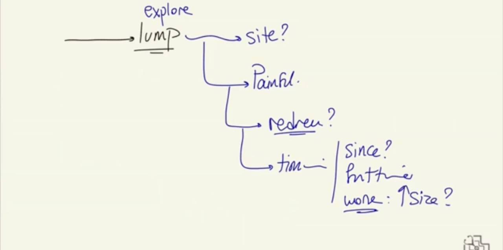
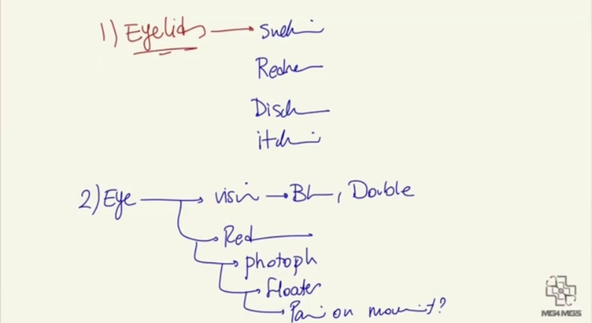
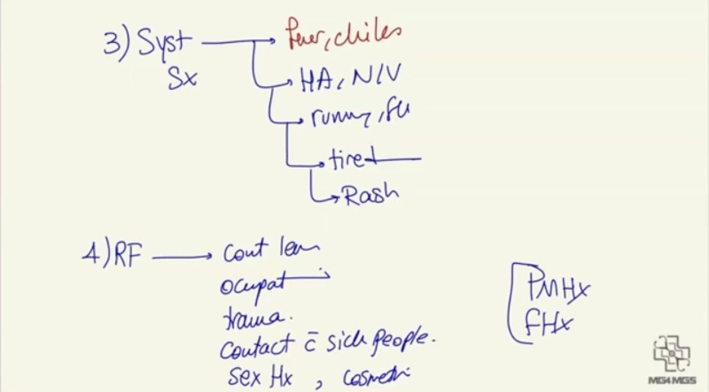
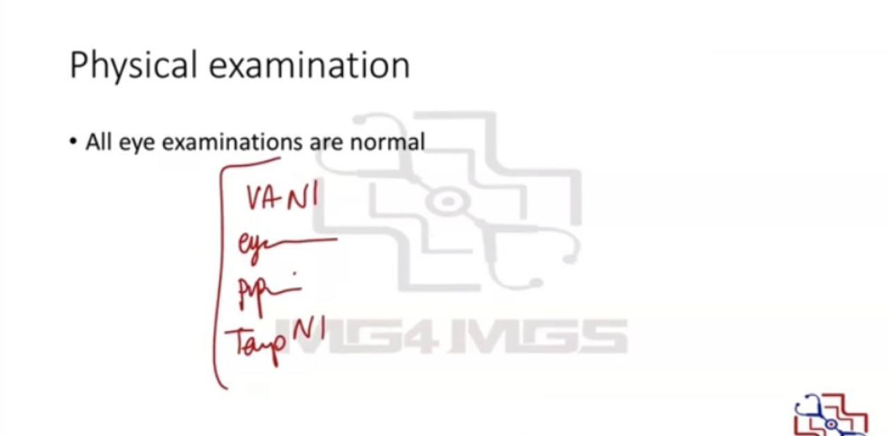

Source: Dr. Amir workshop — Med workshop 2 - 2026 / CLASS 3 OPHTHALMOLOGY (Aug 2026 drop) · Specialty: ophthalmology
A patient (Jimmy) presents with irritation of the eye; some candidates recall the stem as a lump on the eyelid - the lump may only emerge during the history rather than in the stem. Face-to-face station with ID check and hand hygiene. There is no separate physical-examination task, but a photograph is provided after the prompt.
If the complaint is irritation: clarify what the patient means - is it pain, a gritty sensation, or irritated skin? If there is pain, characterise it (SIQORAA: site, intensity, quality, onset, radiation, aggravating/relieving factors, including whether blinking or eye movement worsens it).
If the complaint is a lump: explore the site (inner corner raises tear-gland pathology; outer positions suggest other causes), whether it is painful/tender, its surface, associated redness, duration, first episode or recurrent, and whether it is enlarging.
Eyelid questions: swelling, redness, discharge, itch.
Eye questions: blurred or double vision, redness, photophobia, flashes/floaters, pain on eye movement.
Systemic questions: fever/chills (infection), headache, nausea and vomiting (glaucoma), runny nose/flu-like symptoms, tiredness, rash.
Risk factors: contact-lens use, occupation, ocular trauma, contact with unwell people; if time permits, sexual history and (in women) eye cosmetics, plus past and family history of eye problems.
The patient reports a painful lump on the lower eyelid with everything else normal. The examiner provides a photograph; recall places the lesion on the lateral lower lid, consistent with a chalazion. The remainder of the eye examination card is normal - visual acuity, eye movements, pupils and temperature all normal.
Stye vs chalazion: both arise from lid glands but in different locations. A stye (hordeolum) sits at the eyelid margin; a chalazion is deeper because it involves the meibomian glands within the tarsal plate.
Explain that a chalazion is a blocked eyelid (meibomian) gland in which secretions build up to form a lump. Offer differentials: stye (different lid gland), blepharitis, and the broader list (glaucoma, orbital cellulitis, uveitis, conjunctivitis). If the presentation is genuinely a lump, add skin cancers of the eyelid (e.g. basal cell carcinoma presenting as a nodular lump) - and screen for weight loss and family history of skin cancer.
Conservative (first-line, per RACGP):
If not resolving (usually reviewed at 4-6 weeks): refer to an ophthalmologist for intralesional steroid injection or incision and curettage (a small incision to drain the retained secretion).
Stye management: usually resolves with warm compresses, gentle massage and lid hygiene; surgical drainage is rarely needed as most discharge spontaneously. Chalazion is deeper and more persistent than a stye.




Reviewed by: physical-examination-expert (Australian clinical educator, ophthalmology focus) · fact-checked against the irStudy medical textbook RAG index.